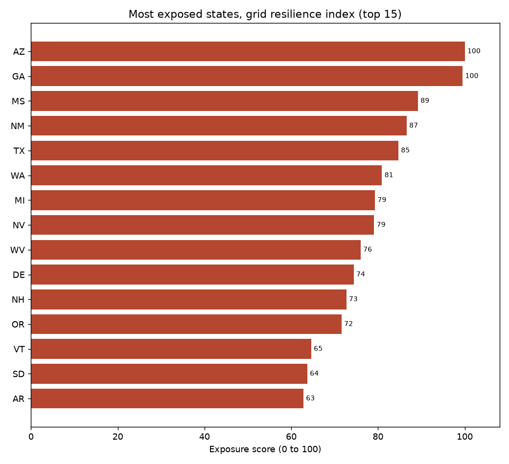

Grid Resilience Exposure Index
A small data project that ranks US states by how exposed their electricity systems look, using only public data.
The numbers on this page use the built in sample data, not a live download, so the ranking is an example of what the project outputs rather than a real result.

What the score means
Every state gets one number from 0 to 100. A higher score means the state looks more likely to struggle to keep the power on. That number is built from three simpler pieces, all from public figures:
- Outage burden. How often the power goes out and for how long, using the industry measures SAIDI and SAIFI.
- Concentration. How much of a state's power leans on one fuel type or one very large plant.
- Exposure deficit. Whether there is much spare capacity above peak demand, and how varied the supply is.
The three pieces are put on the same scale and blended. The weights live in one settings file, so they are easy to change and re-run.
Most exposed states (sample run)
| Rank | State | Score |
|---|---|---|
| 1 | Arizona | 100.0 |
| 2 | Georgia | 99.5 |
| 3 | Mississippi | 89.2 |
| 4 | New Mexico | 86.6 |
| 5 | Texas | 84.7 |
| 6 | Washington | 80.9 |
| 7 | Michigan | 79.3 |
| 8 | Nevada | 79.1 |
| 9 | West Virginia | 76.0 |
| 10 | Delaware | 74.4 |

How it was built
The analysis runs in Python: it pulls the public data (or falls back to a
built in sample), cleans and joins it, scores each state, and writes the
charts and a results table. The map shown above is drawn in R with the
usmap package, which lays out all 50 states including Alaska and
Hawaii. The same results are also exported as a GeoPackage so they can be
opened in mapping software like QGIS.
Skills used
- Python (intermediate)
- R (intermediate)
- GIS (beginner)
The GIS part is basic for now. It is my first go at working with map data: a shaded state map and an exported layer I can build on later.
Run it yourself
With Python installed, from the project folder:
pip install -r requirements.txt
python pipeline.py
Full setup notes, including the optional R map and how to plug in a live EIA data key, are in the project README.